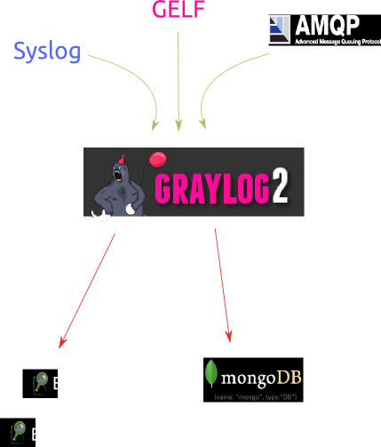
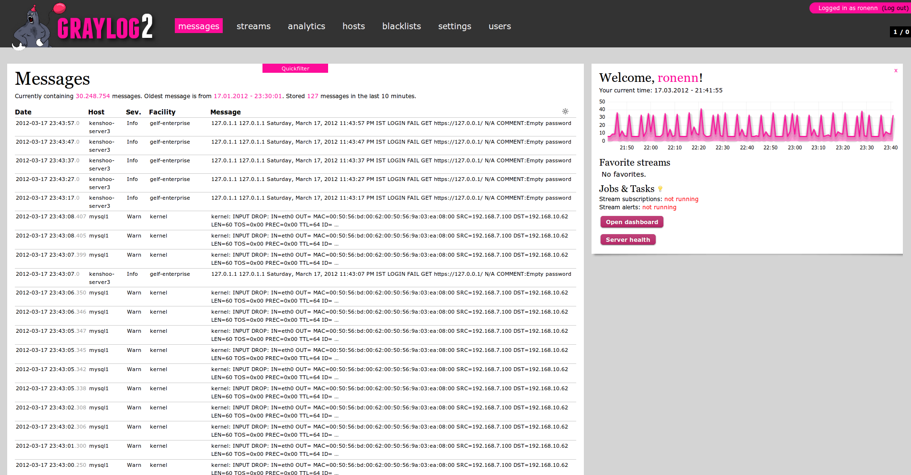
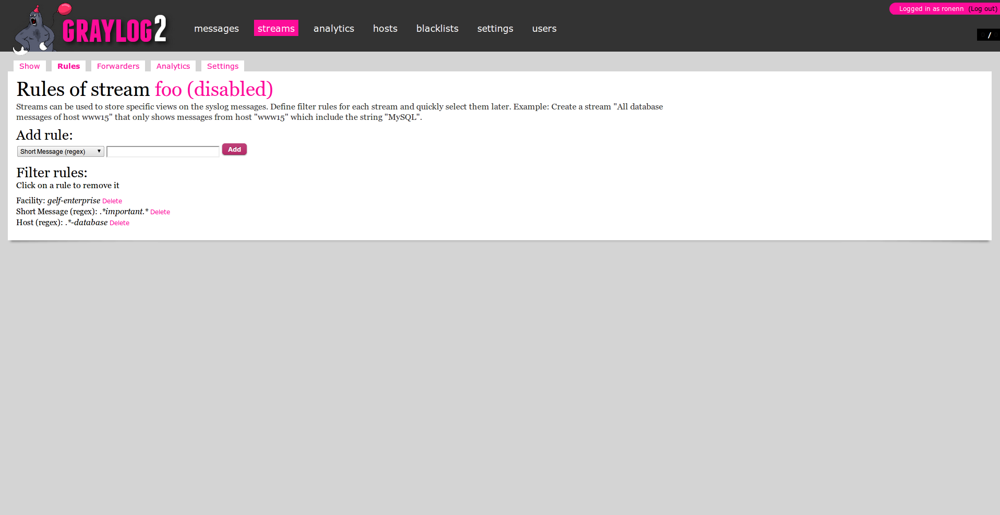
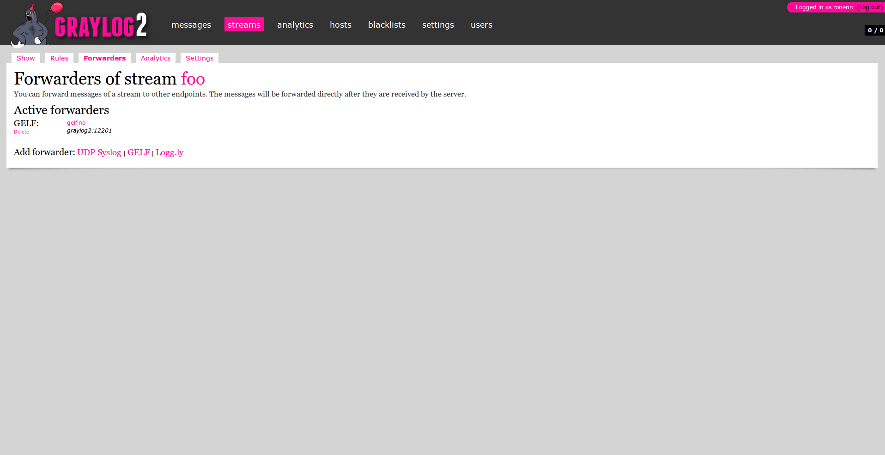

Your browser doesn't support the features required by impress.js, so you are presented with a simplified version of this presentation.
For the best experience please use the latest Chrome, Safari or Firefox browser. Upcoming version 10 of Internet Explorer should also handle it.
Gelfino introduction
The micro server that could
Our applications are becomming more and more
distibuted
We need to track analyse and react to
events
.
Current ssh and tail doesn't
scale!




Gelfino a tiny
distibuted
We need to track analyse and react to
events
.
Current ssh and tail doesn't
scale!
Summary